مجتمع فرهنگی ووچو، گچساران
VOUCHOU CULTURAL COMPLEX · GACHSARAN · SHEET 01: CONCEPT & FORM
این مجموعه در محله لبنان، یکی از محلههای محروم در بافت فرسوده شهرستان گچساران واقع است؛ محلهای با شیب تند کوهپایهای، کوچههای باریک پلکانی و خانههای خردپایه که پس از جنگ تحمیلی و اسکان مهاجران شکل گرفت و سالها با فقر و محرومیت دستوپنجه نرم میکرد. تجربه موفق معمار در «مجموعه فرهنگی هنری هونه» (محله سادات) زمینهساز خلق ووچو شد تا با رفع کاستیها، روحی تازه از نشاط و توانمندی را به کالبد محله بازگرداند.
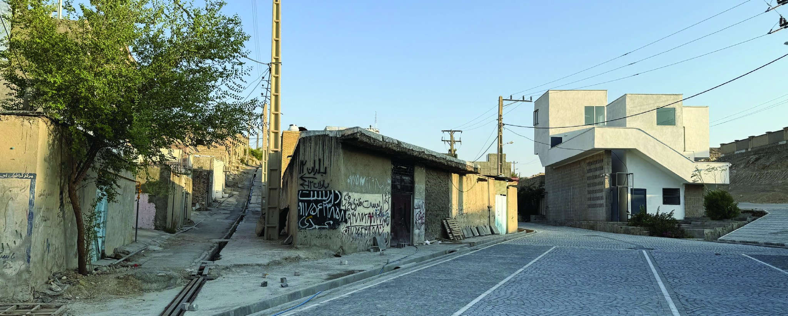
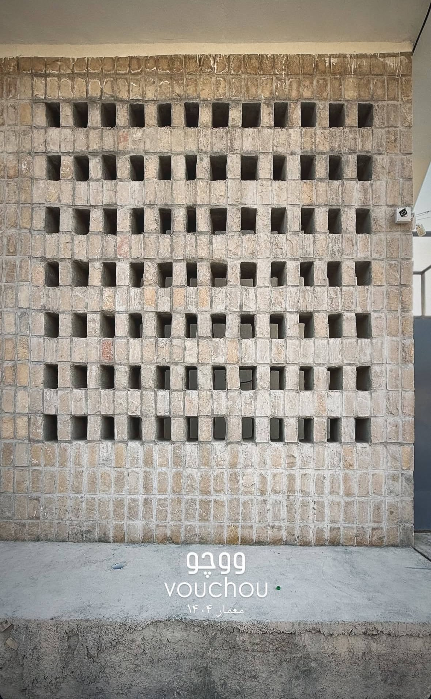
ایجاد کتابخانه محلهای، فضاهای مطالعه استاندارد و کارگاههای آفرینش هنری جهت توانمندسازی نسل جوان محروم از سرانه رفاهی.
تبدیل نبش تاریک و رهاشده به کانون نورانی، سرزنده و امن از طریق استقرار کافه، حیاط روشن و پاتوق نشستن شبانهروزی.
طراحی نانوایی بومی سنگک، کتابفروشی و کافه در جداره خیابان برای تأمین مستمر درآمد نگهداری بدون نیاز به بودجه دولتی.
موقعیت استراتژیک در شکست شیب: جانمایی در نبش گذر اصلی به بنا اجازه میدهد تا هم به عنوان یک نشانه شهری خوانا (Landmark) در دید ناظر از پاییندست خیابان عمل کند و هم از ترازهای بالا، افقهای گستردهای از منظر درهها را به روی شهروندان بگشاید.
تحلیل دیاگرامی این بنا نشاندهنده یک رویکرد شکلی مدولار، افزایشی (Additive) و تندیسگون است که بر پایه هندسه مکعبی، تفکیک عملکردی فضاها و پیوستگی بصری و فیزیکی شکل گرفته است.
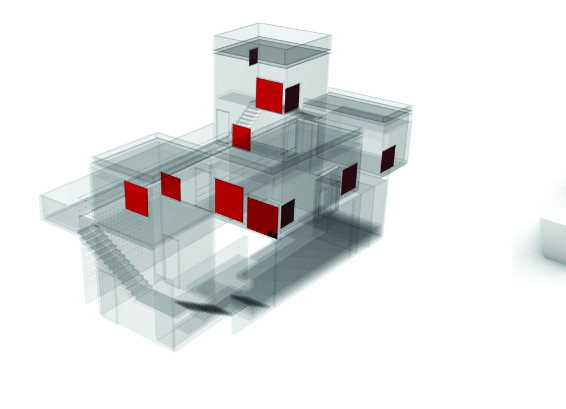
روزنهها (Punched)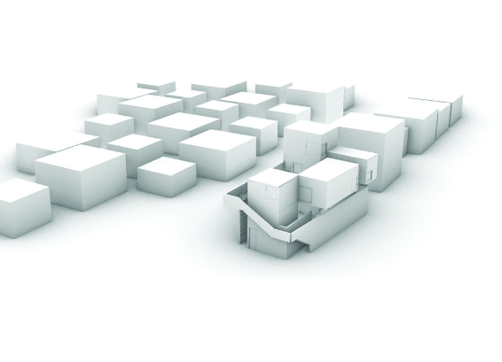
مدول پایه شطرنجی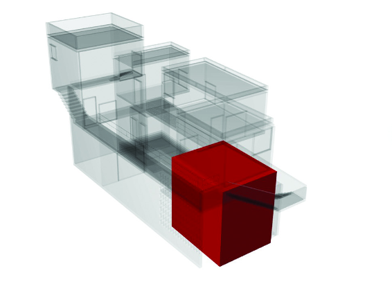
کنسولهای حجمی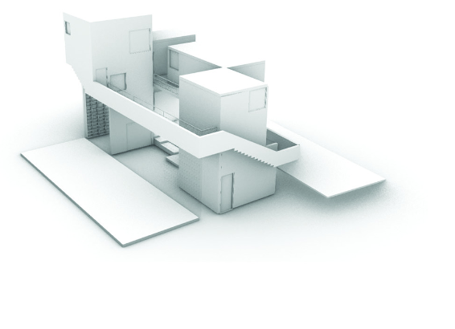
دانهبندی متخلخل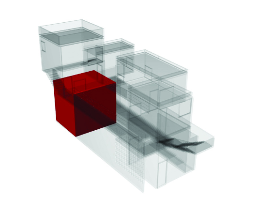
نقاط ثقل بصری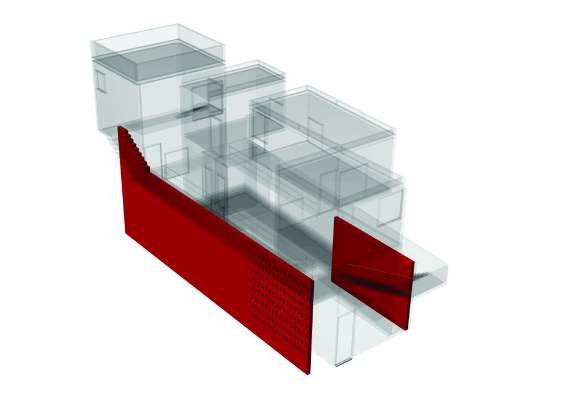
صفحات کالبدی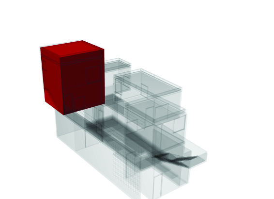
ترازهای ارتفاعی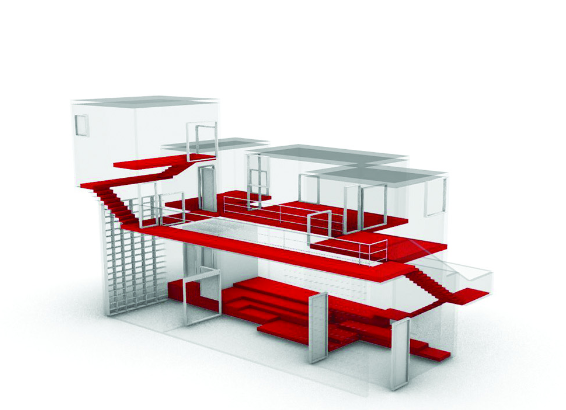
پرومناد عمودی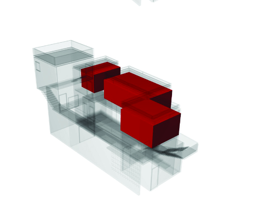
خوشهبندی فضایی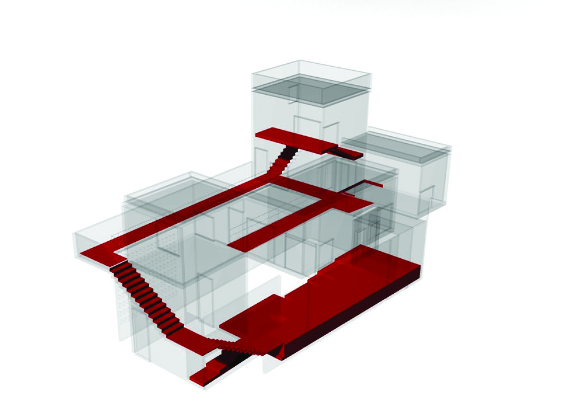
پیوستگی شبکه دسترسی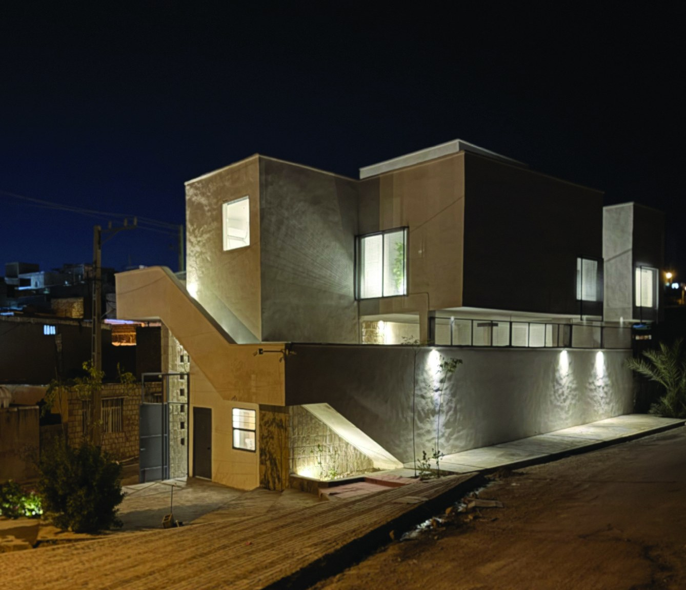
«قرارگیری حجم سفید روی جدارههای سنگی، نمادی شفاف از تکیه آینده پرنور بر هویت گذشته است. ترکیب سنگ مالون تیشهخورده بومی با احجام مینیمال مدرن و نورپردازی هدفمند شبانه، این بنا را از ساختمانی خاموش به نگین سرزنده بافت تبدیل نموده است.»